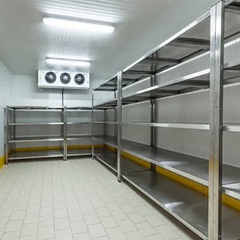

Tipo de negocio
Cuéntanos qué actividad realiza tu empresa.
Soluciones para comercios y empresas · La Virginia, Pereira y Cartago
MS Refrigeración cuenta con más de 5 años de experiencia en mantenimiento, reparación e instalación de equipos de refrigeración. Consulta por soluciones para cuartos fríos y equipos comerciales.

Cuéntanos qué equipo utiliza tu operación, qué necesita y en qué municipio se encuentra.
Comparte los datos básicos para revisar tu solicitud.
Cuéntanos qué actividad realiza tu empresa.
Indica tipo, marca, referencia y cantidad de equipos si aplica.
Describe la falla, mantenimiento o instalación que requieres.
Indica si estás en La Virginia, Pereira o Cartago.
Atendemos todos los días de 8:00 a. m. a 12:00 m. y de 1:00 p. m. a 5:00 p. m. La disponibilidad se confirma según el tipo de servicio y la ubicación.
WhatsApp: +57 311 422 4538
Contactar por WhatsAppEl costo del diagnóstico puede variar según el servicio y el desplazamiento. Las condiciones de garantía dependen del trabajo y los repuestos utilizados.